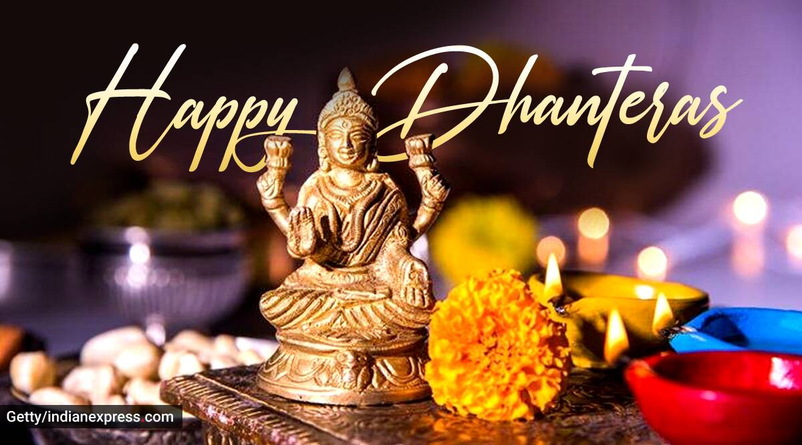
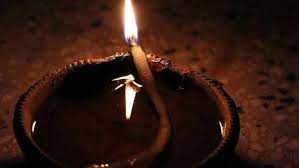

Diwali, the festival of lights is indeed the most awaited and the most celebrated festivals of India. People in every nook and cranny of the country welcome the festival with enthusiastic gestures. This wonderful festival is the celebration of five days. On the third day of the celebratory occasion, the key rituals of the Diwali festival take place. Lighting of Diyas and candles all around the house, worshipping the Laxmi Ganesha to summon health and wealth and bursting crackers are the chief rituals of the festival. In addition to that, the exchange of heartfelt gifts during Diwali these days have become a mandatory part of the celebration. Friends, families, and colleagues share with each other Diwali gifts as a gesture of showing love and affection. Also, special and grand feast with delicious food that mandatorily includes different varieties of sweets is the special attraction of the occasion.
Dhanteras, also known as Dhanatrayodashi, is the first day that marks the festival of Diwali in most of India. It is celebrated on the thirteenth lunar day of Krishna Paksha in the Hindu calendar month of Ashvin or Kartika.
Naraka Chaturdashi is an annual Hindu festival that falls on Chaturdashi of the Krishna Paksha in the Hindu calendar month of Ashwayuja or Kartika. It is the second day of the five-day long festival of Diwali. Hindu literature narrates that the asura Narakasura was killed on this day by Krishna and Satyabhama
